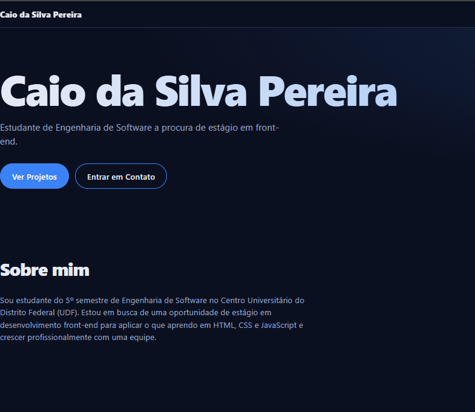
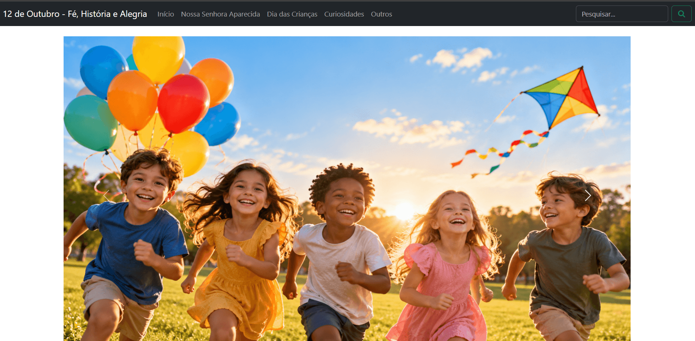

Portfólio Pessoal
Um portfólio simples para exibir meus projetos e habilidades, desenvolvido do zero com HTML, CSS e JavaScript, com layout responsivo para celular e computador. Aprendi a organizar um projeto em pastas separadas, estruturar páginas e aplicar estilos e funcionalidades para tornar o site mais interativo.
Visualizar Projeto
Visualizar Código

12 de Outubro - Fé, História e Alegria
Um site com informações sobre 12 de Outubro (Dia das Crianças e Nossa Senhora Aparecida), em que desenvolvi com HTML, CSS e JavaScript durante a aula do professor de Programação Web, Eliel. Usei JavaScript para abrir menu, trocar conteúdo da página, desta forma, aprimorei minhas habilidades em manipular elementos da página com JavaScript
Visualizar Projeto
Visualizar Código